Chapitre 2 Diagnostic de l’environnement
2.1 Le Geoportail
Le Géoportail est un projet de l’Institut géographique national initié en 2006 visant à faciliter l’accès à l’information géographique de référence. Par des ajouts successifs de bases de données, il donne aujourd’hui accès gratuitement à une grande variété de ressources :
fonds de carte thématiques et historiques ;
localisation de bâtiments et services ;
données démographiques, etc.
2.1.1 Les bases
Le Geoportail a été conçu comme un moteur de recherche géographique. Pour accéder à l’interface complète, il suffit de saisir une adresse ou un lieu (nom de commune, bâtiment remarquable, etc).
Prenons par exemple l’adresse de la médiathèque de Mireuil, à La Rochelle :
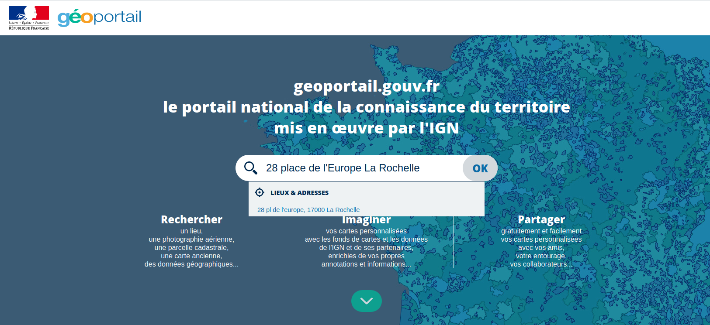
Par défaut, le Geoportail propose une vue aérienne de la zone et indique le résultat pour l’adresse demandée sous forme d’un marqueur :
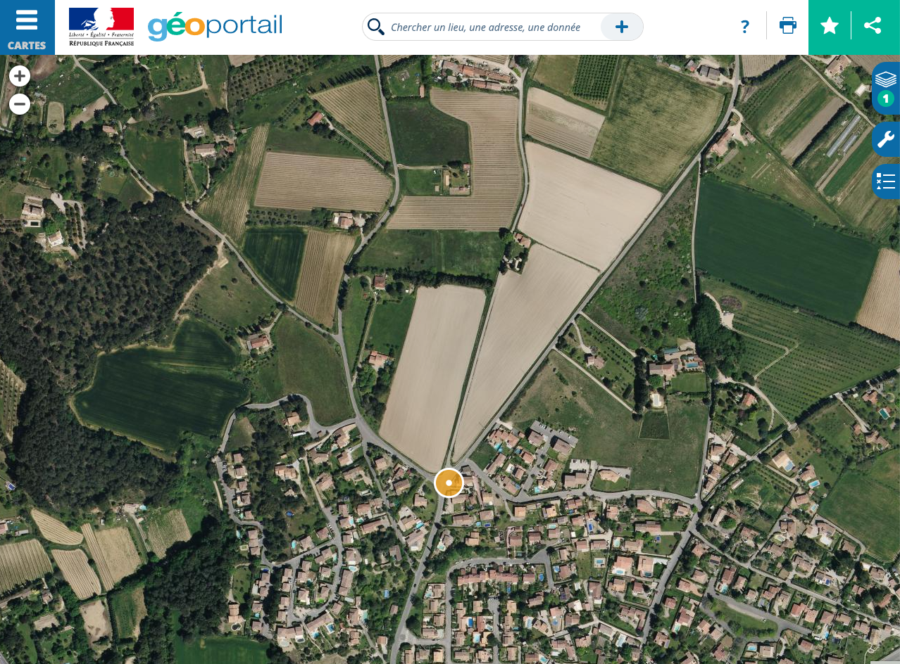
2.1.2 Principales fonctionnalités
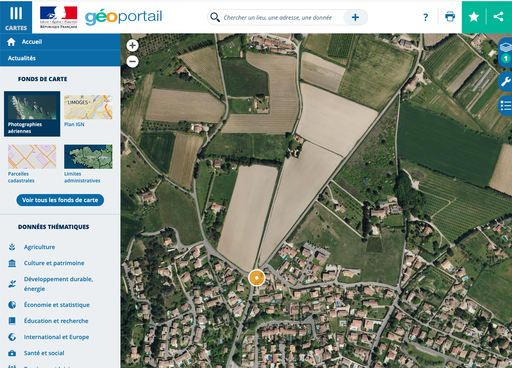
La plupart des fonctionnalités sont accessibles en cliquant sur le bouton Cartes en haut à gauche de l’interface Geopotail.
2.1.2.1 Fonds de carte
La première option disponible est le choix du fond de carte. L’interface propose par défaut trois fonds de carte (photographies aériennes, carte IGN et plan IGN) ainsi que les parcelles cadastrales qui peuvent être ajoutées par dessus un autre fond.
Mais il ne s’agit que d’une petite partie des options disponibles : en cliquant sur Voir tous les fonds de carte, l’intégralité des 14 fonds de carte disponibles s’affichent. Vous pouvez ainsi choisir des cartes topographiques, historiques (carte de 1950, cartes d’Etat major, cartes de Cassini …) et aussi des cartes issues d’autres services comme Esri ou OpenStreetMap (comme dans notre exemple ci-dessous). La carte sélectionnée apparaît en surbillance dans le volet “fonds de carte” :
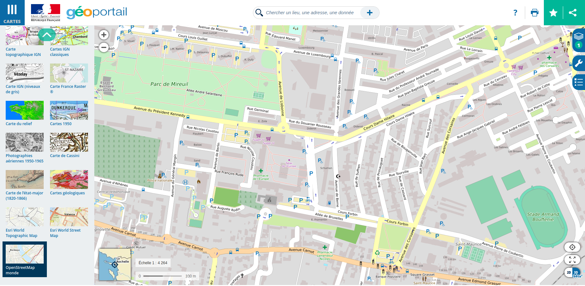
2.1.2.2 Données thématiques
L’interface Geoportail propose un certain nombre d’indicateurs et d’objets géolocalisés regroupés par thèmes dans le volet Cartes, sous les fonds de carte.
La première catégorie de données que vous pourrez utiliser sont les lieux notables ou établissements géolocalisées : lieux culturels, d’enseignement, sportifs … il vous suffit de sélectionner la catégorie de lieu que vous souhaitez géolocaliser sur la carte pour que tous les lieux entrant dans ce groupe apparaissent sur la carte sous forme de pictogrammes. En plus de leur emplacement, l’outil propose des données complémentaires qui s’affichent en pop-up en cliquant sur le pictogramme.
Pour reprendre l’exemple du quartier autour de la médiathèque de Mireuil, à La Rochelle, il nous suffit de sélectionner la catégorie Tourisme et loisirs puis Sports et enfin Stades pour faire apparaître tous les stades alentours :
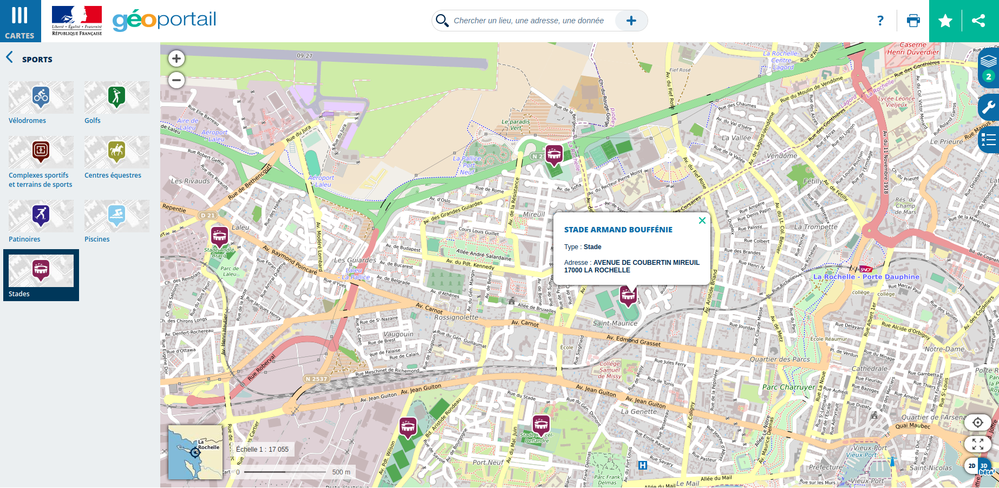
Vous aurez également accès à des données démographiques et économiques géolocalisées. Issues d’enquêtes statistiques (notamment du recensement de la population), ces données peuvent être visualisées sous forme de carreaux de taille égales (250 ou 500 mètres de côté). D’où leur nom de données carroyées. Pour plus de précisions sur ce que ce terme recouvre, le site de l’Insee propose une riche documentation sur la méthode et ses usages.
La catégorie économie et statistique contient par exemple une rubrique logement qui vous permettra de visualiser en carreaux la surface moyenne des logements :
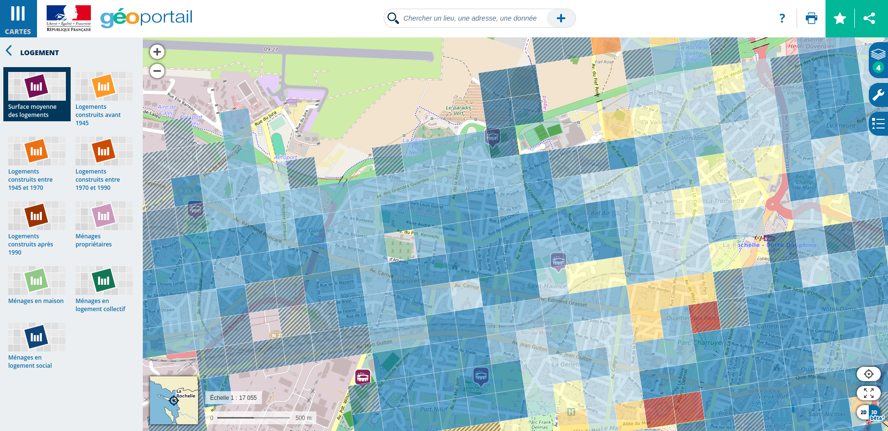
Une foule d’autres données sont disponibles, des plus techniques aux plus pratiques :
lignes de transports en commun ;
géologie ;
cartes forestières ;
zones sismiques …
Nous vous laissons explorer vous-mêmes !
2.1.2.3 Carte en cours
Il peut cependant arriver que, dans un moment d’emballement, vous n’entassiez un peu trop d’informations sur votre modeste carte … heureusement, l’interface permet à tout moment de consulter la liste des données sélectionnées et d’y remettre de l’ordre.
En cliquant sur le bouton couches à droite de l’écran, un volet s’ouvre récapitulant les données que vous avez ajouté à la carte :
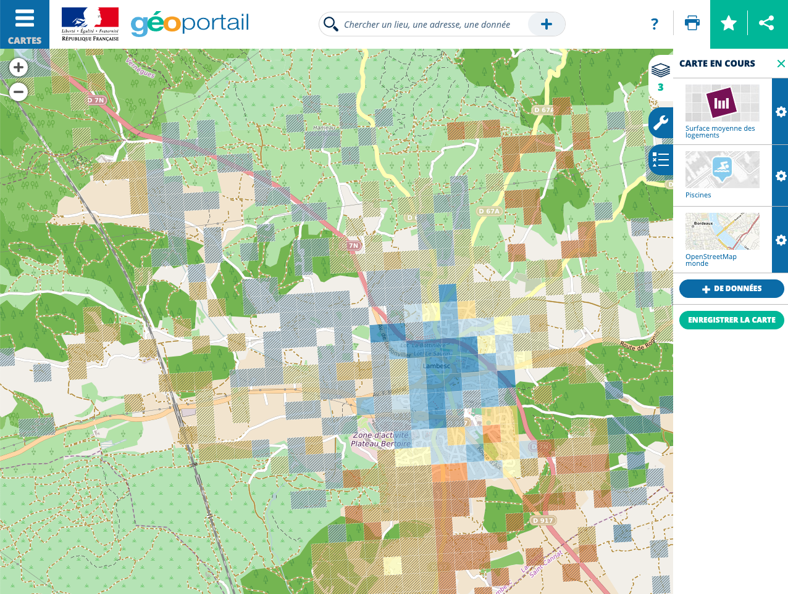
En plus de récapituler les opérations que vous avez réalisé, ce panneau vous permet de modifier, supprimer ou réordonner les éléments de votre carte.
Dans notre exemple, nous avons décidé de faire trois modifications :
mettre en valeur les stades (en cliquant - déposant cette couche au dessus des autres) ;
passer la surface moyenne des logements en noir et blanc (en cliquant sur la palette de la couche concernée) ;
réduire l’opacité de la même couche (en déplaçant le bouton sur la réglette).
Et voilà le résultat :
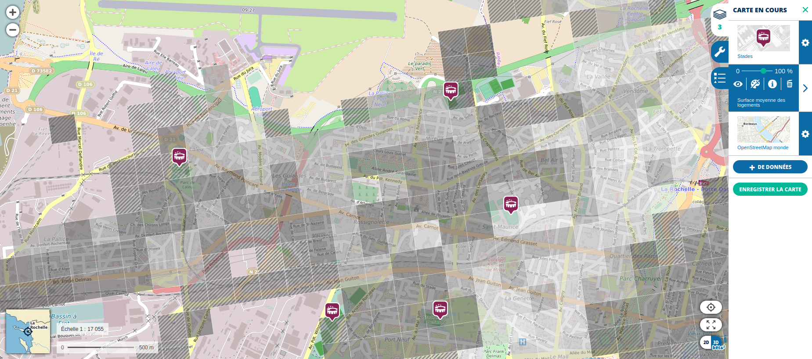
2.1.3 Exporter ses productions
Une fois les couches choisies et paramétrées, il ne nous reste plus qu’à les partager.
Pour partager le lien vers la carte dans le Geoportail, vous disposez de plusieurs option de partage en cliquant sur l’icone partage en haut à droite :
vous pouvez récupérer un lien permanent (qui contient tous les paramètres de la carte et vous permet d’y accéder à volonté), par exemple, celui de la carte que nous avons créé en exemple ;
vous pouvez intégrer cette carte à un site Internet avec le code HTML qui permet de l’afficher dans une page ;
vous pouvez la partager sur les réseaux sociaux Facebook et Twitter ou par mail ;
vous pouvez enfin imprimer dans un fichier en cliquant sur le bouton Impression dans le coin supérieur droit et en choisissant cette option dans la fenêtre qui s’ouvre alors.
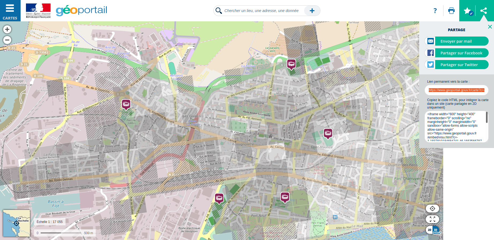
### Précautions
Le Geoportail n’est pas conçu pour permettre la récupération de vos cartes. Aussi, vous risquez de rencontrer quelques difficultés :
la plateforme Geoportail peut être indisponible temporairement, vous empêchant de consulter vos cartes ;
l’impression dans un fichier peut modifier le cadrage et supprimer des informatons (comme les isochrones) ;
etc.
Pour vous assurer que vous ne perdrez pas votre carte, nous vous encourageons à récupérer la carte sous format image en réalisant une capture d’écran.
Pour cela, deux possibilités s’offrent à vous:
utiliser la fonction “Capture d’écran” de votre système d’exploitation, soit par un bouton dédié, soit par une combinaison de touches. Des tutos sont disponibles que ce soit pour PC, Mac ou Linux ;
installer une extension de navigateur permettant de réaliser des captures d’écran. Parmi les plus populaires et simples d’utilisation, nous pouvons vous recommander Awesome Screenshot disponible en extension Chrome et Firefox.
2.1.4 Fonctionnalités avancées
Le volet “outils” élargit votre palette de fonctionnalités de cartographie plus poussées.
Vous pourrez annoter la carte à l’aide de pictogrammes ou de texte, dessiner des formes … et même calculer des itinéraires !
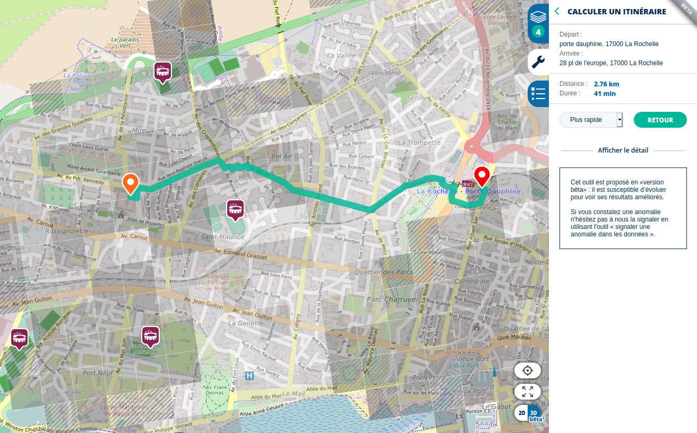
2.2 Applications pratiques
Les outils du Geoportail peuvent être mis à profit du diagnostic environnemental de votre bibliothèque. Avec ses fonctionnalités de base et ses fonctionnalités avancées, nous allons pouvoir composer une carte riche de données sur les environs de votre établissement.
2.2.1 Localiser les établissements recevant du public alentours
Pour commencer, nous allons identifier les lieux d’intérêts autour d’une bibliothèque : établissements culturels, lieux d’enseignements et lignes de transport.
Rendons-nous à Aix-en-Provence, dans le quartier de la Bibliothèque Méjane, rue des Allumettes. Nous avons choisi le fonds de carte IGN, clair et lisible, car nous allons avoir beaucoup d’éléments à ajouter par dessus. Une fois posé notre point d’intérêt, la carte est prête à être complétée :
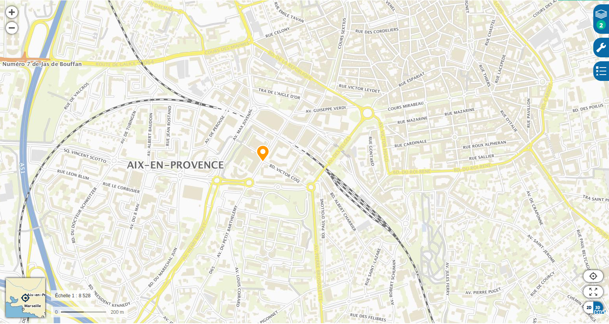
Nous allons nous pencher sur plusieurs catégories d’établissements dans les données thématiques :
dans la rubrique Culture et patrimone, nous pouvons ajouter les musées, qui constituent des points d’intérêt culturel majeurs ;
dans Tourisme et loisirs, n’oublions pas les sports : votre établissement est peut-être sur le chemin d’une piscine ou d’un complexe sportif ;
la proximité d’une gare (qu’elle soit ferroviaire ou routière) génère également du passage (vous les trouverez dans la rubrique Territoires et transports) ;
enfin, de la maternelle à l’enseignement supérieur, les établissements d’éducation et de recherche sont de gros pourvoyeurs de lectrices et de lecteurs !
Une fois toutes ces cases cochées, la carte s’est considérablement enrichie en informations : en quelques clics, nous avons rajouté pas moins de 8 couches de données !
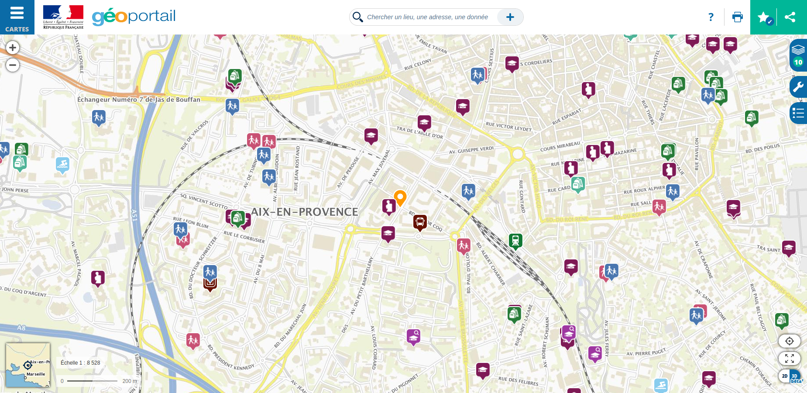
2.2.2 Cartographier la démographie aux abords de votre bibliothèque
Deuxième étape : nous souhaitons ajouter des données sur les populations habitant à proximité.
La rubrique Economie et statistique propose trois entrées : démographie, logement et niveau de vie. Nous allons nous intéresser à la démographie d’Aix et plus particulièrement aux jeunes publics des bibliothèques.
Une fois rajoutée la couche, nous pouvons atténuer un peu les couleurs pour en garder le fond. Nous constatons ainsi un contraste saisissant entre les quartiers au Nord de la Méjane et ceux situés au Sud de cette bibliothèque emblématique d’Aix :
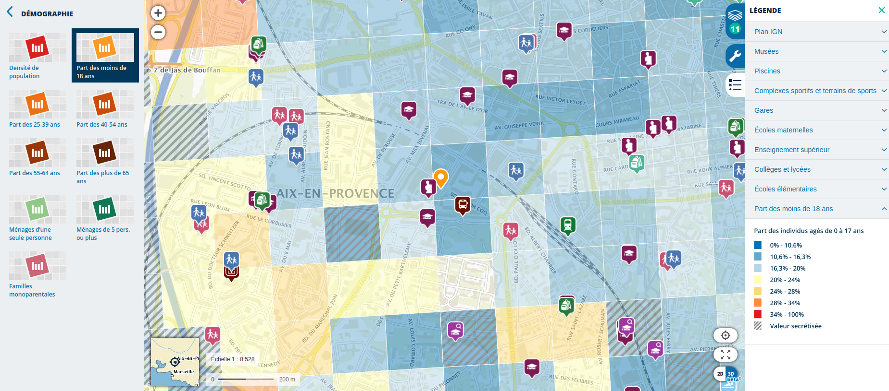
2.2.3 Calculer un rayon de 10 minutes de marche
Le Geoportail propose une fonctionnalité expérimentale : le calcul de l’isochrone, c’est à dire le rayon couvert dans un temps précis pour un moyen de transport donné.
Ici, nous nous proposons de calculer “tout ce qui se trouve à dix minutes de marche” de la bibliothèque Méjane. Pour cela, il nous faut aller dans l’onglet Outils et sélectionner Mesures, où se trouve l’option Calculer une isochrone.
L’interface demande alors plusieurs informations :
l’adresse de départ ou d’arrivée (ici, celle de la bibliothèque) ;
la mesure : isochrone (temps donné) ou isodistance (distance donnée) ;
le temps (en heure et minutes) ;
le mode de transport (voiture ou piéton) ;
le sens du parcours (depuis l’endroit indiqué ou dans sa direction).
Pour notre calcul, nous allons chercher à savoir tous les endroits depuis lesquels l’on peut rejoindre la Méjane à pied en 10 minutes ou moins. La Méjane sera donc le point d’arrivée, la durée 10 minutes et le mode de transport, piéton. Une fois les paramètres renseignés, le Geoportail lance le calcul et affiche en vert la zone couverte :
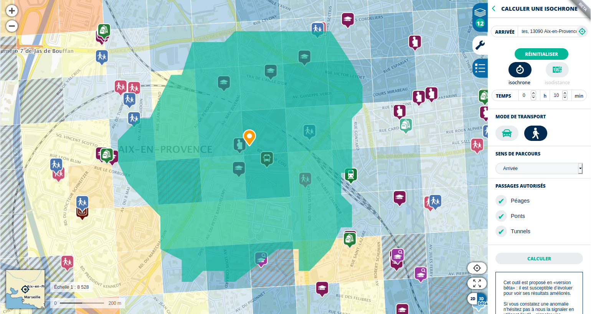
Nous apprenons ainsi qu’à dix minutes à pied de cette médiathèque se trouvent :
1 gare (et un 2ème à une minute de plus) ;
1 musée ;
5 établissements d’enseignement supérieur ;
5 établissements d’enseignement primaire et secondaire ;
plusieurs quartiers “jaune”, c’est-à-dire avec plus de 20% d’individus de moins de 18 ans.
Supersposées sur une même carte, ces informations permettent d’objectiver les caractéristiques du territoire dans lequel s’ancre l’établissement et d’identifier de possibles interactions avec d’autres structures et les populations qui l’habitent ou le traversent.